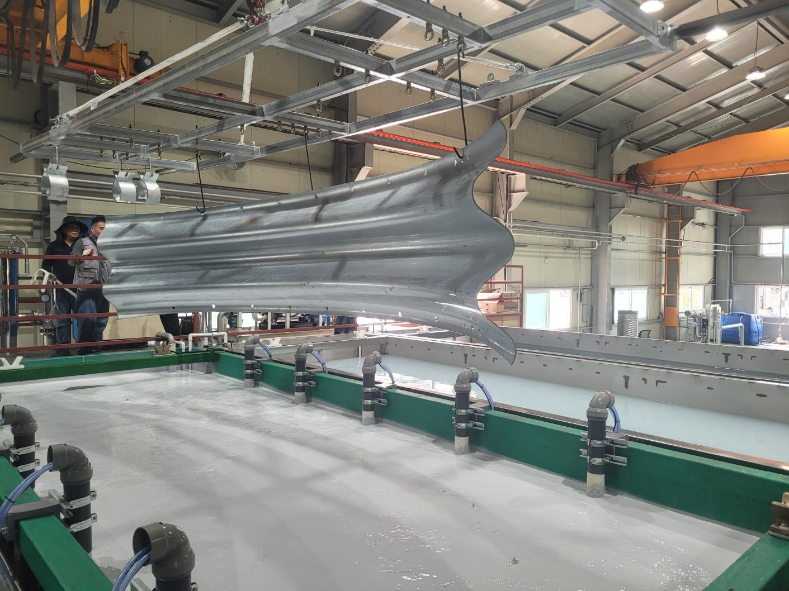
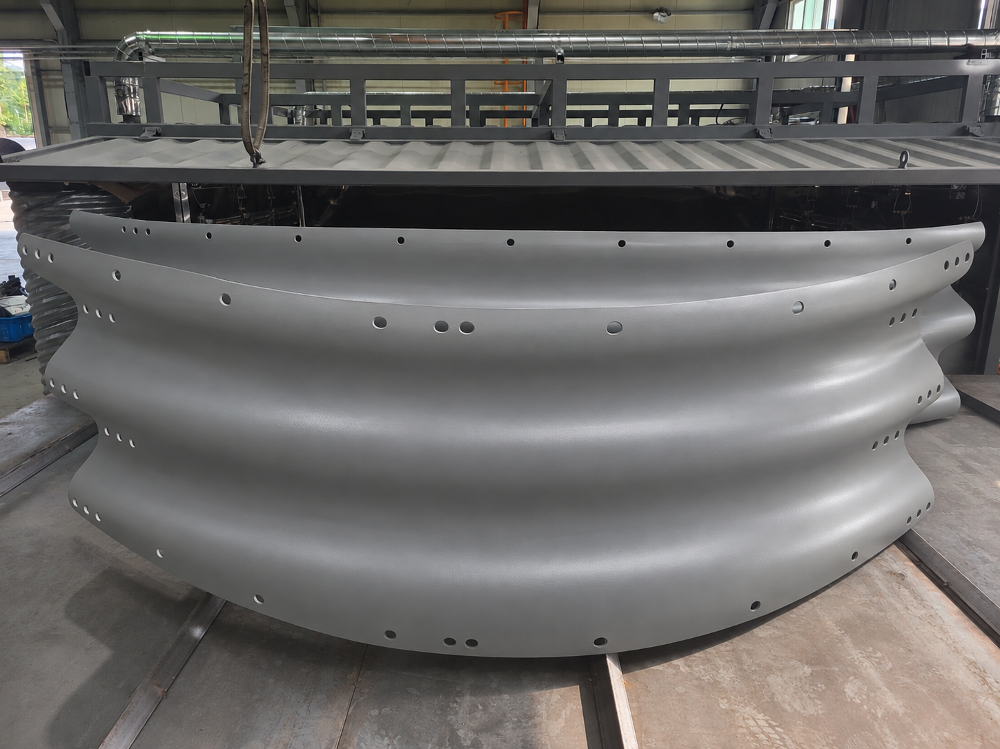
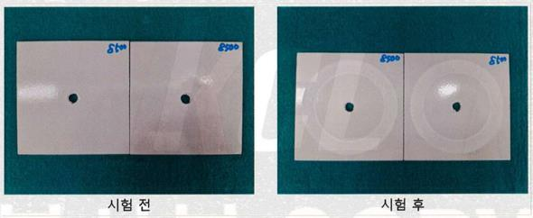

NET 신기술
친환경 표면처리 및 전착도장 관련 신기술 인증 자료입니다.

표면 밀착성부터 내마모·내후성까지, 시험으로 확인한 전착도장 기술.
전해 에칭으로 도장이 붙을 표면을 만들고, 지르코늄 피막과 전착도장으로 아연도금 파형강판의 표면 보호 성능을 높입니다.
친환경 표면처리 및 전착도장 관련 신기술 인증 자료입니다.
기능성 전착도장 파형강판의 혁신제품 지정서를 확인할 수 있습니다.
현재 가격협상 단계이며, 조달청 등록은 아직 완료되지 않았습니다.
2024년 NET 발표자료와 2026년 혁신제품 발표자료에 제시된 시험 결과를 정리했습니다. 조건과 비교 대상을 함께 확인하세요.
산·알칼리·물·습기 조건에서 각각 72시간 시험한 후 1mm 크로스컷 밀착성 0등급.
2026년 발표자료 23쪽 · KCL평균 마모감량 97mg → 58mg. CS-17, 하중 1,000g, 1,000회 조건의 비교 결과.
2026년 발표자료 24쪽 · KCL·Koptri발표자료에 제시된 최초·최대 규격 총 14종의 중성염수분무 시험 결과.
2026년 발표자료 26쪽 · KTRUV 촉진내후성 시험에서 균열·부풀음·갈라짐·떨어짐·벗겨짐 없음.
2024년 NET 현장심사 자료 15쪽 · KCL| 확인 성능 | 시험조건 | 발표 결과 |
|---|---|---|
| 산·알칼리 노출 후 밀착성 | 10% 황산 또는 10% 수산화나트륨, 23±1℃, 각 72시간 · 1mm 크로스컷 | 0등급 |
| 물·습기 노출 후 밀착성 | 물: 증류수 60±1℃, 72시간 / 습기: 60±1℃·상대습도 95±5%, 72시간 | 0등급 |
| 내마모성 비교 | CS-17 · 하중 1,000g · 1,000회 | 비교 시료 97mg → 신청 제품 평균 58mg |
| 투과저항성 비교 | 10% 염화나트륨 · 10% 수산화나트륨 · 30% 황산, 각 48시간 | 신청 제품 이상 없음 / 발표자료 비교 제품 적녹 발생 |
| 중성염수분무 | 500시간 · 2026년 발표자료 | 이상 없음 |
| 촉진내후성 | UV 1,000시간: KS M ISO 4892-3·KS A 0063, 2024년 NET 자료 Xenon 300시간: 2026년 발표자료 | 각 시험에서 이상 없음 |
| 추가 확인 항목 | 내충격성 · 핀홀 · 4대 중금속 용출시험, 2026년 발표자료 | 발표자료상 이상 없음 |
출처: 2024년 NET 현장심사 발표자료 15쪽, 2026.04.14 혁신제품 발표자료 23~26쪽. 수치는 해당 시료·시험조건의 결과이며 실제 사용연수로 환산하지 않습니다. 마모감량 감소율은 표의 평균값 97mg과 58mg으로 계산한 약 40.2%입니다. NET 신기술 인증과 혁신제품 지정은 조달청 등록과 별개입니다. 현재 조달 가격협상 중이며 등록 전입니다.
전착도장 설비와 제품 카탈로그를 통해 공정과 제품 구성, 시험자료를 살펴보세요.
탄산수소나트륨 전해 에칭으로 표면에 미세한 요철을 형성하고, 지르코늄 피막과 수용성 아크릴계 전착도장으로 이어집니다. 표면 밀착성을 확보하고 부식·마모 환경에 대응하기 위한 공정입니다.
2024년 NET 현장심사 발표자료 8~9쪽에 수록된 실제 공정과 도장 완료 사진입니다.




각 자료를 눌러 원본을 확인하세요.
2024년 렉스틸 NET 1차·현장심사 발표자료를 바탕으로 정리한 기술 개요입니다.
발표자료는 대형 용융아연도금 제품의 표면처리와 도장 밀착성 개선을 개발 과제로 설명합니다.
탄산수소나트륨 용액을 활용한 전해 에칭으로 표면에 미세한 요철을 형성하여 도장의 접착 기반을 만듭니다.
지르코늄 피막 처리와 기능성 전착도장으로 이어지는 공정입니다. 대형 파형강판에 적용하는 기술로 소개됐습니다.
시험자료에 수록된 실제 시료 사진입니다. 도장 밀착성과 마모 시험 전후의 상태를 확인할 수 있습니다.


기능성 전착도장 파형강판은 현재 조달 가격협상 중이며, 조달청 등록은 아직 완료되지 않았습니다.
등록 완료 후 확정된 모델·규격·물품식별번호와 구매 안내를 제공하겠습니다.
제품과 설계, 시공에 대해 편하게 문의해 주세요.